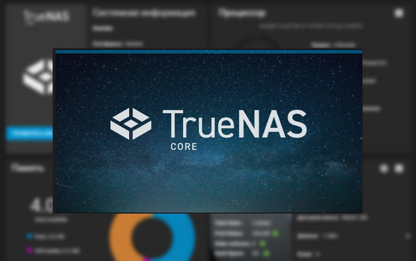
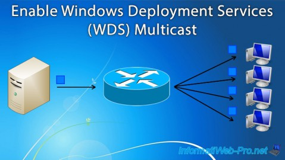
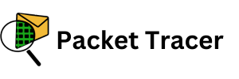
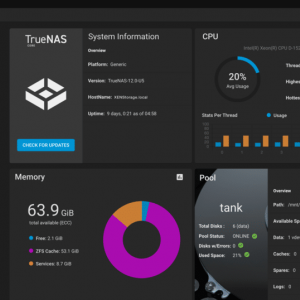
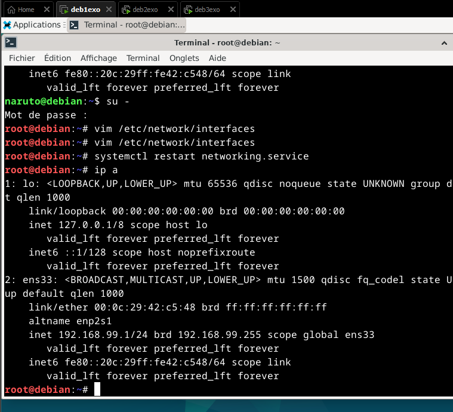
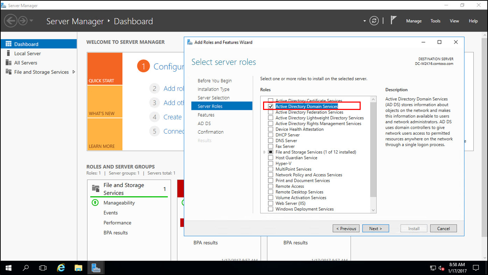
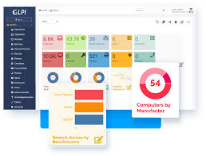
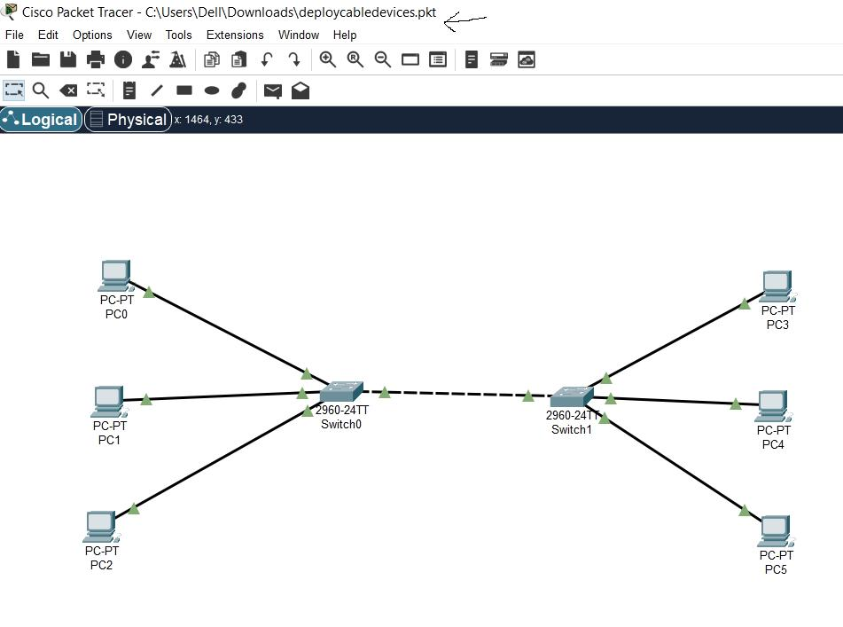

Je suis actuellement en deuxième année de BTS Services Informatiques aux Organisations (SIO), spécialité SISR (Solutions d'Infrastructure, Systèmes et Réseaux) à Ingetis. Mon parcours académique a débuté avec un bac technologique STI2D, spécialité ITEC, suivi de deux années de licence en ingénierie, avant que je ne trouve véritablement ma voie dans le domaine de l'informatique.
C’est au cours de mes études en BTS SIO que ma passion pour l'informatique s'est pleinement révélée. J'ai développé des compétences solides en administration de systèmes et réseaux, en sécurité informatique, ainsi qu’en développement web (HTML, CSS, JavaScript, PHP). J'ai également acquis une maîtrise des technologies comme la virtualisation (VirtualBox, VMware), l’administration de bases de données (SQL), et la gestion des infrastructures réseau.
Ces compétences me permettent de comprendre et de gérer les infrastructures réseau essentielles pour les entreprises.
Passionné par l'informatique, je suis déterminé à continuer à me former et à m'adapter aux nouvelles technologies afin de relever les défis et de proposer des solutions dans ce secteur en constante évolution.
Projets et Travaux SLAM
Projets et Travaux SISR



Mes certifications
CV
Je suis un étudiant passionné par les technologies de l'information et de la communication. Actuellement en BTS SIO, je me spécialise dans les solutions logicielles et les applications métiers.
Je suis toujours à la recherche de nouvelles opportunités pour apprendre et développer mes compétences.
🚀 Compétences:
Développement Front-End: Je jongle avec Javascript (React, Vue), HTML et CSS pour donner vie aux interfaces.
Développement Back-End: Je navigue aisément entre Python, C#, Java, Mysql, et PHP pour créer des fonctionnalités puissantes.
CMS Expertise: J'ai travaillé avec Shopify et WordPress pour créer des expériences web exceptionnelles.
Réseau et Sécurité: J'ai réalisé des travaux pratiques dans laquelle j'ai mise en place des infrastructures complète pour utilisateur comme
, DHCP, DNS et Active Directory(Windows seveur 2012) , tout en maintenant une sécurité de pointe.
Systèmes d'exploitation: Installation, configuration et maintenance des postes de travail (Windows, macOS, Linux).
Support réseau: Gestion des architectures réseau, résolution des problèmes de connectivité.
Support matériel: Installation et maintenance des équipements informatiques (PC, imprimantes, périphériques).
Sécurité informatique: Application des bonnes pratiques de sécurité pour protéger les données et systèmes.
Sens du service: Assistance aux utilisateurs, formation et accompagnement dans l'usage des outils informatiques.
Gestion des priorités: Capacité à traiter plusieurs demandes simultanément et à respecter les délais.
Autonomie et rigueur: Travail indépendant tout en respectant les procédures techniques.
💼 Expériences:
Stage chez ECONOCOM WORKPLACE INFRA INNOVATION (novembre 2024 - decembre 2024):
J'ai répondu aux demandes de support en personne.
J'étais responsable de la configuration des postes informatiques, y compris les mises à jour des systèmes et des logiciels.
J'ai géré la gestion des équipements pour assurer la mise à disposition et restitution des matériels lors des arrivées et departs des collaborateurs..
J'ai les incidents techniques conjointement avec le Service Desk
et utiliser un système de tickets pour gérer et résoudre les incidents.
Stage chez Chardo formation (juin 2024 - juillet 2024):
J'ai répondu aux demandes de support par téléphone, e-mail et en personne.
J'étais responsable de la configuration des postes informatiques, y compris les mises à jour des systèmes et des logiciels.
J'ai rédigé des guides et formé les utilisateurs.
J'ai géré les incidents via un système de tickets.
La veille technologique est un processus continu de collecte, d'analyse et de diffusion d'informations sur les avancées technologiques. Elle permet aux entreprises et aux professionnels de rester informés des dernières innovations, des tendances du marché et des évolutions dans leur domaine d'activité. La veille technologique est essentielle pour anticiper les changements, prendre des décisions stratégiques et maintenir une compétitivité sur le marché.
Pour ma part ma veille technologique est principalement effectuée sur la chaîne YouTube Underscore_ celle-ci est dédiée à l'actualité technologique et à la vulgarisation des sujets liés à l'informatique et à la cybersécurité. Elle propose des vidéos informatives sur des découvertes récentes, des analyses de tendances technologiques et des discussions sur des sujets d'actualité dans le domaine de l'IT.
Par exemple, elle possède des vidéos populaires incluent des analyses sur des découvertes susceptibles de bouleverser l'informatique quantique ou des discussions sur des avancées en intelligence artificielle.
La chaîne est animée par des passionnés de technologie qui partagent leur expertise et leurs points de vue sur des sujets variés, allant des innovations en informatique aux enjeux de la cybersécurité.
Pour en savoir plus et découvrir leurs vidéos, voici une vidéo récente de la chaîne Underscore_ sur le thème de l'intelligence artificielle et de l'éthique :
1. Focus sur la cybersécurité
La chaîne Underscore_ accorde une attention particulière aux sujets liés à la cybersécurité. Les vidéos traitent souvent :
Des nouvelles menaces cyber (malwares, ransomware).
Des techniques pour se protéger des attaques : sécurisation des réseaux, des données personnelles, et bonnes pratiques en ligne.
Des analyses d’incidents majeurs récents dans le domaine de la sécurité informatique, comme des fuites de données à grande échelle ou des attaques ciblées.
Tendances observées :
Un accent sur la cybersécurité proactive (anticipation des risques) et la cyber-hygiène quotidienne.
L'évolution des attaques sur des technologies émergentes comme l’IoT (Internet des objets) et la 5G.
2. Avancées en intelligence artificielle et machine learning
Underscore_ s’intéresse beaucoup aux dernières innovations en intelligence artificielle (IA) et au machine learning (ML).
Ils explorent des applications pratiques de l'IA dans divers domaines : reconnaissance d’images, traitement du langage naturel, et automatisation industrielle.
Des explications sur les mécanismes internes des IA, comme le fonctionnement des réseaux neuronaux et des algorithmes d’apprentissage.
Tendances observées :
Développement des IA génératives (comme ChatGPT et DALL·E) et l’impact sur les secteurs créatifs.
Progrès dans le deep learning et ses applications concrètes dans des industries variées (santé, finance, transport).
3. Blockchain et cryptomonnaies
La chaîne aborde aussi des sujets autour de la blockchain et des cryptomonnaies.
Évolutions des technologies de blockchain et leurs applications au-delà des cryptomonnaies, comme dans les contrats intelligents et les systèmes décentralisés.
Analyse des fluctuations des cryptomonnaies et leurs implications économiques, ainsi que les risques potentiels associés aux plateformes d’échange.
Tendances observées :
Développement des plateformes de finance décentralisée (DeFi) et la démocratisation des NFT (jetons non fongibles) dans divers secteurs.
Intégration de la blockchain dans des domaines comme la traçabilité des chaînes d'approvisionnement.
4. Quantique et innovations informatiques
Des vidéos récentes traitent des avancées dans le calcul quantique et leurs implications futures.
Exploration des concepts fondamentaux du quantum computing, notamment les bits quantiques (qubits) et les algorithmes quantiques.
Implications pour la cryptographie et les systèmes de sécurité actuels.
Tendances observées :
Montée en puissance des collaborations entre grandes entreprises (Google, IBM, Microsoft) pour la recherche en calcul quantique.
Application dans la résolution de problèmes complexes comme l’optimisation ou la simulation de processus chimiques.
5. Matériel informatique et nouvelles technologies
Underscore_ analyse souvent les innovations matérielles récentes, comme les processeurs, cartes graphiques, et autres composants.
Tests et comparaisons de nouveaux matériels, notamment dans le domaine du gaming ou pour les stations de travail.
Explication des nouvelles architectures matérielles, comme celles utilisées dans les processeurs ARM et RISC-V.
Tendances observées :
Croissance des ordinateurs quantiques en termes de capacité et de faisabilité à grande échelle.
Évolution des semi-conducteurs pour répondre à la demande croissante de performances dans les serveurs et centres de données.
Conclusion et recommandations
La veille technologique sur Underscore_ révèle que la chaîne couvre des sujets essentiels et actuels dans le domaine technologique, avec un fort accent sur la cybersécurité, l'intelligence artificielle et l'informatique quantique. Pour maintenir une veille efficace, voici quelques recommandations :
Surveiller les nouvelles vidéos pour suivre les dernières tendances, notamment via des notifications ou des alertes spécifiques.
Analyser les commentaires et retours des utilisateurs sous chaque vidéo pour comprendre les attentes du public et détecter les tendances émergentes.
Explorer les partenaires ou sponsors associés à la chaîne pour comprendre leurs influences et leur orientation technologique.
En continuant cette veille, il est possible de rester informé sur les sujets brûlants et les innovations à venir dans le domaine de la tech.
Tableau de Synthèse
Vous pouvez télécharger le tableau de synthèse en cliquant sur le lien ci-dessous :
Travaux pratiques en JAVA sur le fait de créé une calculatrice.
TrueNAS

Installations de TrueNas sur HyperV: TrueNAS sera configuré comme une solution de stockage en réseau (NAS) fiable et performante. Il permettra de centraliser les données de l'entreprise tout en offrant des fonctionnalités avancées comme le partage de fichiers via SMB/CIFS, NFS, ou FTP. Pour en savoir plus vous pouvez cliquer ici: https://www.truenas.com/truenas-scale/
Windows Deployment Services
Les Services de déploiement Windows (Windows Deployment Services ou WDS) sont une technologie de Microsoft permettant d'installer un système d'exploitation Windows via le réseau
DHCP sur Debian

Traveau Pratique su la configuration du serveur DHCP sur Debian
Windows server

Le serveur Windows Server sera configuré pour héberger Active Directory, offrant une gestion centralisée des utilisateurs, des groupes et des ressources réseau. Il permettra également de gérer les permissions et de renforcer la sécurité de l'environnement. Ce serveur sera interconnecté avec un serveur DHCP sous Debian pour l'attribution automatique des adresses IP, ainsi qu'avec TrueNAS pour le stockage des données.
GLPI sur Debian

GLPI est installé sur une machine Debian pour assurer la gestion des ressources informatiques, la traçabilité des équipements et le suivi des tickets d'incidents. Ce logiciel open source permettra une organisation efficace du parc informatique
CISCO PACKET TRACER

Cisco Packet Tracer est un outil de simulation de réseau gratuit créé par Cisco Systems, leader dans la fabrication d’équipements réseaux. Il permet aux étudiants et aux professionnels de concevoir, de configurer et de tester des réseaux virtuels sans avoir à utiliser des équipements physiques.